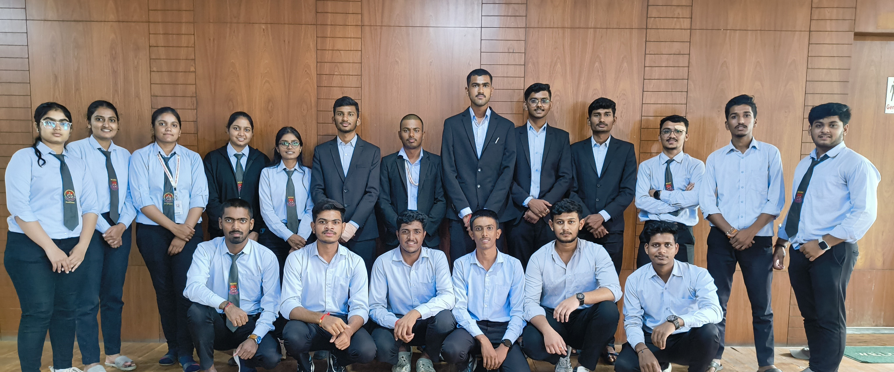

Matoshri Technical Event Cell
MTEC: The Place Where Engineers Go to Be... Well, Engineers.
Mtec is a place where the serious business of engineering meets the casual atmosphere of a college campus. It's like a giant puzzle box filled with equations, blueprints, and the occasional caffeine-fueled all-nighter. Think of it as a real-world engineering lab, but with less lab coats and more late-night pizza orders.
MTEC in college is essentially a student-run organization dedicated to promoting technical learning and development beyond the classroom. They bridge the gap between theory and practical application by organizing exciting events that:
Spark Innovation and Applied Learning: MTECs host hackathons, coding competitions, design challenges, robotics workshops, and more. These events push students to think creatively and use their technical knowledge to tackle real-world problems, fostering innovative solutions.
Enhance Skill Development:Participation in these events exposes students to new technologies and software. They can experiment, gain new skills, and refine their existing technical expertise, making their learning more application-oriented (ying yong de).
Create a Thriving Technical Community:TECs bring together students with similar interests, providing a space to share ideas, collaborate on projects, and participate in events that excite them. This fosters a sense of community and a more well-rounded college experience.
Goals
The main goal of a Technical Events Cell (TEC) in college is to bridge the gap between theoretical learning and practical application in technical fields. They achieve this by organizing events.
Innovation and Applied Learning: Through hackathons, coding competitions, design challenges, and workshops, TECs push students to think creatively and use their technical knowledge to solve real-world problems.
Skill Development: Participation in these events exposes students to new technologies and software, allowing them to experiment, gain new skills, and improve their existing technical expertise.
In essence, a TEC aims to create a more application-oriented learning environment for students.
Meet MTEC
Matoshri E-Cell
Matoshri E-cell: Where Entrepreneurship Meets the Unexpected
Imagine a place where business plans collide with impromptu dance-offs, and serious pitches are punctuated by unexpected bursts of laughter. Welcome to Matoshri E-cell, the entrepreneurial hub that's equal parts boardroom and comedy club.
Here, budding entrepreneurs don't just learn about market analysis and financial projections; they also learn how to navigate the unpredictable twists and turns of the entrepreneurial journey with a sense of humor. It's a place where failure is not just accepted but celebrated as a stepping stone to success, and where every pitch deck is a potential stand-up routine.
So, if you're looking for a serious education in entrepreneurship with a side of comedic relief, Matoshri E-cell is the place for you. Just be prepared for the unexpected – because anything can happen in this quirky yet inspiring community.
A Comedy of Errors and Entrepreneurship
Imagine a startup pitch meeting where the CEO accidentally pitches a cat food business instead of a tech company. Or a business plan that's more of a stand-up comedy routine than a financial forecast. Welcome to Matoshri E-cell, where the unexpected is not just tolerated but celebrated.
This unique entrepreneurial hub is a breeding ground for hilarious anecdotes and unforgettable experiences. From impromptu talent shows to epic fail competitions, Matoshri E-cell proves that entrepreneurship can be just as much fun as it is challenging. So, if you're ready to laugh, learn, and maybe even launch your own quirky business, this is the place for you.
Meet E-cell
Follow Us on
MTEC - InstagramE-Cell - Instagram